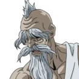

Characters
Brunhilde
Voiced by: Miyuki Sawashiro[3] (Japanese); Laura Post[4] (English)
The eldest of the valkyries and their leader, she convinces the gods to hold the Ragnarok. She despises the gods and takes advantage of the situation to enact her revenge at them.
Göll
Voiced by: Tomoyo Kurosawa[3] (Japanese); Anairis Quinones[5] (English)
The fourth of the 13 valkyrie sisters. She performed a Völundr with Lü Bu in round 1, turning into the "Sky Piercer", a halberd.
Lü Bu â€
Voiced by: Tomokazu Seki[3] (Japanese); Kaiji Tang[8] (English)
A military general and warlord who lived during the late Eastern Han dynasty of Imperial China and humanity's representative for the first match, fighting and losing against Thor. His weapon is the Sky Piercer, a halberd granted by the valkyrie Randgriz, whose special ability allows Lu Bu to break any armor.
Adam â€
Voiced by: Soma Saito[9] (Japanese); Jonah Scott[10] (English)
The progenitor of all humanity who fights and loses against Zeus in the second match. Designed in the image of a god, Adam can perfectly replicate any move and technique he lays his eyes upon. His weapon is a knuckleduster, granted by the valkyrie Reginleif.
Kojiro Sasaki
Voiced by: Kazuhiro Yamaji[9] (Japanese); Keone Young (English)
A famous Japanese swordsman who fights and wins in the third match against Poseidon. His weapon is the Monohoshizao, a two-handed nodachi granted by the valkyrie Hrist, whose special ability allowed her to transform into two weapons after the Monohoshizao was shattered.
Jack the Ripper
Voiced by: Tomokazu Sugita[11] (Japanese); Jeff Leach, David Errigo Jr.[12] (young) (English)
An infamous British serial killer from the late 19th century who fights and wins in the fourth match against Heracles. He wears a pair of gloves granted by the valkyrie Hlökk, whose special ability allows Jack the Ripper to turn anything his gloves touch into a divine weapon.
Thor
Voiced by: Hikaru Midorikawa[3] (Japanese); Jalen K. Cassell[13] (English)
The Norse god of thunder and a representative for the gods for the first match, which he wins, armed with the hammer Mjölnir.

Zues
Voiced by: Wataru Takagi[3] (Japanese); Chris Edgerly[14] (English)
The supreme Greek god and chairman of the Gods' Council who fights and wins the second match, fighting barehanded.
Poseidon â€
Voiced by: Takahiro Sakurai[9] (Japanese); Bumper Robinson (English)
The Greek god of the sea and Zeus' older brother who fights and loses the third match, armed with a trident.
Heracles â€
Voiced by: Katsuyuki Konishi[11] (Japanese); George Newbern[12] (English)
A former human and Greek god of strength and heroism who fights and loses the fourth match by the gods' side, armed with a divine club.
For More Information Just Visit: This Site...